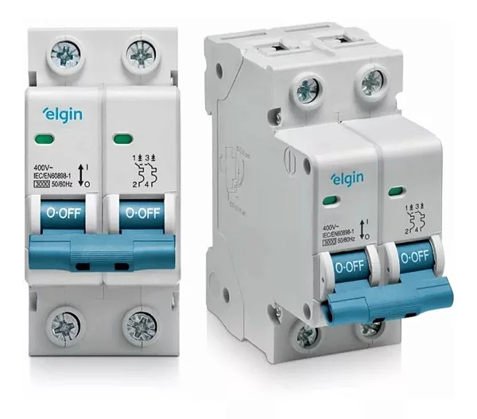
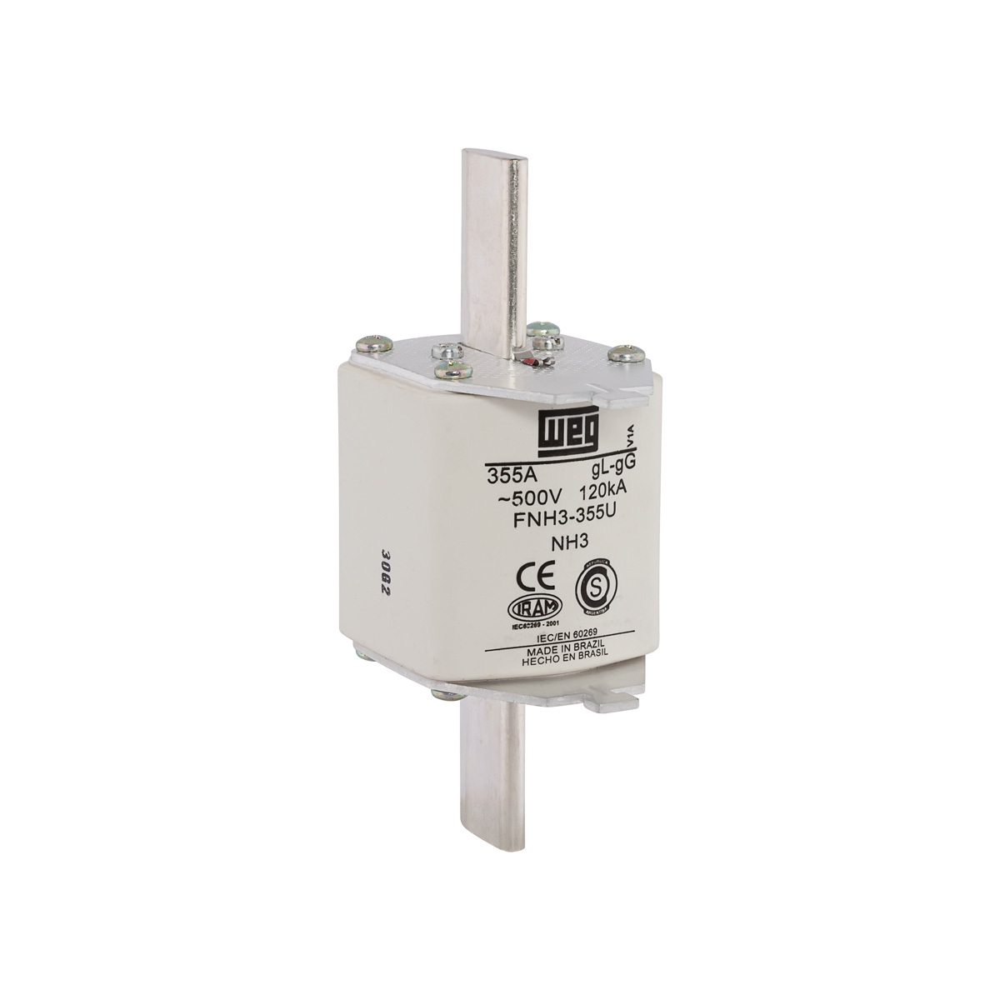
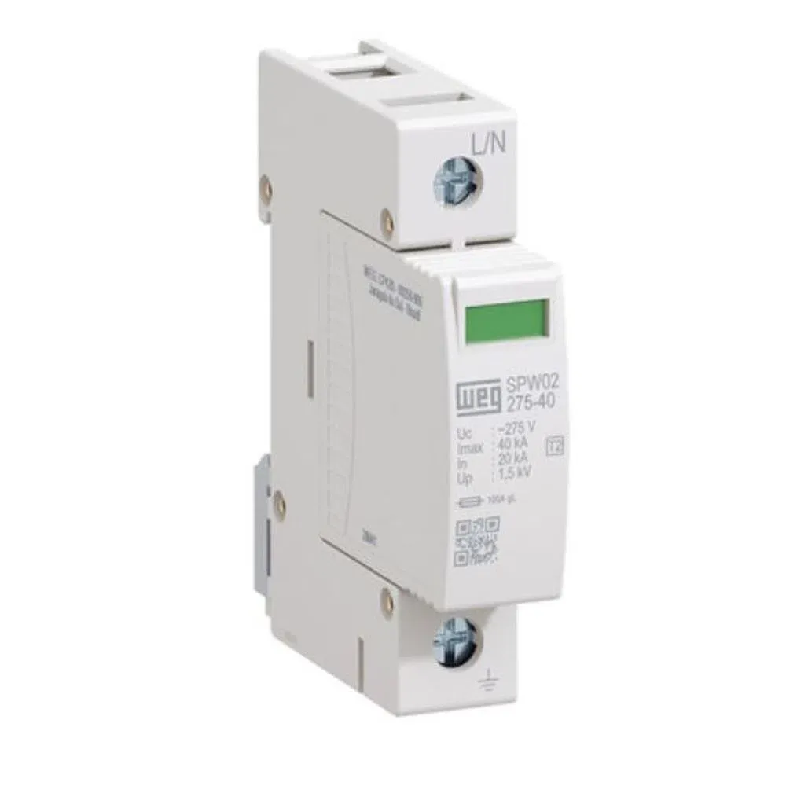
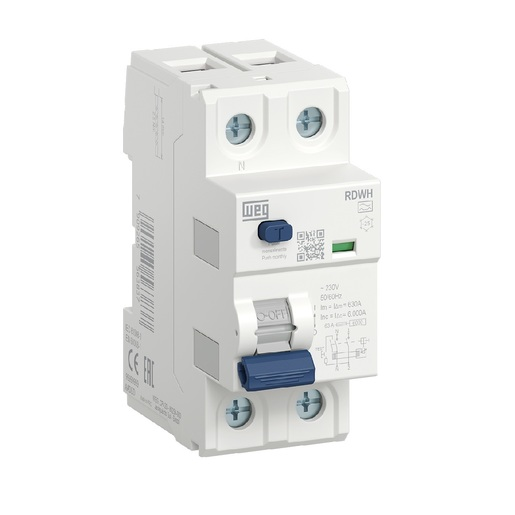
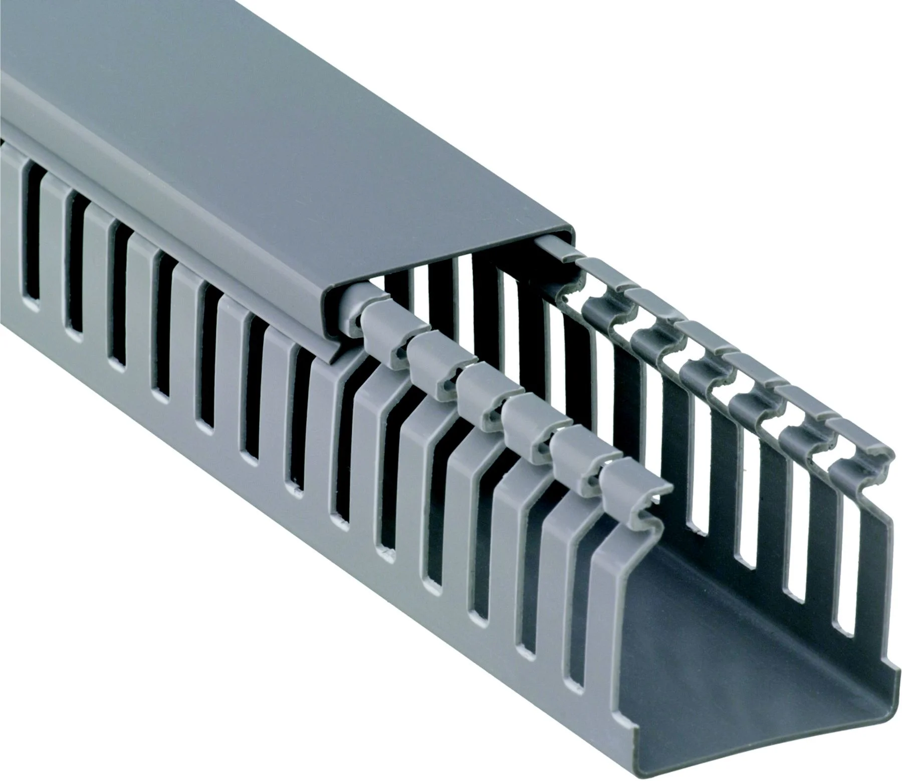

Nossos produtos

disjuntor geral
O disjuntor geral serve para proteger toda a instalação elétrica contra sobrecargas e curto-circuitos. Ele atua como um "guardião" do sistema, interrompendo a energia automaticamente caso a corrente ultrapasse o limite seguro dos fios. Também permite cortar a eletricidade de todo o imóvel para manutenções seguras.

disjuntor
O disjuntor é um dispositivo de segurança que protege a instalação elétrica cortando a energia automaticamente em caso de anomalias. Ele atua como um "guarda-costas" dos fios e cabos, prevenindo superaquecimentos, derretimentos e possíveis incêndios.

fusiveis
Os fusíveis são dispositivos de segurança essenciais em sistemas elétricos e automotivos. A principal função deles é proteger a fiação e os equipamentos contra sobrecargas e curtos-circuitos, derretendo e interrompendo a corrente elétrica antes que ocorram danos severos ou incêndios.

DPS
O DPS (Dispositivo de Proteção contra Surtos) serve para proteger os equipamentos elétricos e eletrônicos da sua casa ou empresa contra picos de tensão (surtos elétricos). Ele desvia o excesso de energia para o aterramento, evitando a queima de aparelhos como TVs, geladeiras e computadores.

DR
Protege as pessoas contra choques elétricos, desligando o circuito em caso de fuga de corrente.

barramento fase
Distribui a alimentação elétrica para os diversos circuitos do painel.

barramento neutro
Realiza a conexão e distribuição dos condutores neutros da instalação.

barramento terra
Centraliza os condutores de aterramento, garantindo maior segurança à instalação.

Bornes de passagem
Permitem a conexão organizada e segura entre fios e cabos elétricos.

Blocos distribuidores de potência
Distribui a energia elétrica para vários circuitos de forma prática e segura.

Trilho DIN
Estrutura metálica utilizada para fixar dispositivos elétricos dentro do painel.

Canaletas
Organizam e protegem os fios e cabos, proporcionando um acabamento mais seguro e profissional.
.webp)
Fonte de Alimentação 24 Vcc
Uma fonte de alimentação é o componente responsável por converter a energia elétrica da tomada (Corrente Alternada - CA) em uma energia estável e segura (Corrente Contínua - CC) que os aparelhos eletrônicos realmente conseguem utilizar, ajustando a tensão e a corrente para as necessidades de cada dispositivo.